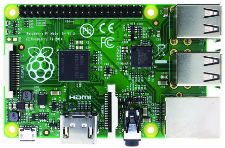
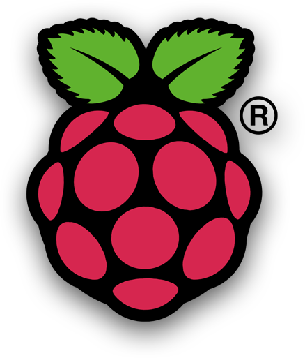

Thanks for stopping by! Whether you want to get to know me, get a hold of me, or just see what projects I'm cooking up at the moment, you can do it all here.
Updates and construction will be ongoing in early 2015. I was very anxious to get my site launched, but I'm very much looking forward to a huge re-factoring, enhanced responsiveness,
setting up an API of all of all my favorite quotes to repopulate the "good words from good people" section on every reload, and a lot more.
Check back often!
Update - June 9, 2015
Been swamped finishing Cu29 Creation's website which is scheduled to be launched in approximately 2 weeks. I'm enjoying the chance to showcase the beautiful work of Stephanie Wager.
It's very easy to create an appealing website when my layout features such wonderful designs.
I am reformatting the website to PHP to implement the Stripe credit card authorization API. My biggest problem now is just that a huge boom in demand for her jewelry has left most of the pictures in the slide show and the gallery obsolete! I guess
it's a good sign that I was right in spending so much time creating a website for this great stuff. I'm not the only one who loves it!
I also purchased the domain name fromtheblueroom.com to host a separate website for blog articles on things other than tech and web development, such as Denver-area sports and maybe a few cool clothes, gadgets, or cars.
I'll continue to update my blog as soon as I complete the website! I'm excited to continue the project with my Raspberry Pi.


The Raspberry Pi is a lot of things, but most basically, it's just a low-cost, credit-card-sized computer CPU. It was developed by a UK company as an inexpensive way to teach kids how computers work and how to program them.
It has since EXPLODED among the "Maker" community as a powerful and extremely versatile device that is able to facilitate an almost infinite number of projects and inventions.
They are so popular, in fact, that in their first few months on the market, production could not keep up with the demand, and RPis were backordered on many websites for several months afterwards.
It's driven by a Linux operating system, which programmers might recognize
as a "pure" OS alternative to Windows, but many others are familiar with it as the base for the Darwin platform that runs Apple's new OS X.
From the Raspberry Pi website:
"It’s capable of doing everything you’d expect a desktop computer to do, from
browsing the internet and playing high-definition video, to making spreadsheets, word-
processing, and playing games.
What’s more, the Raspberry Pi has the ability to interact with the outside world, and has been used in a wide array of digital maker projects, from music machines and parent detectors to weather stations and tweeting birdhouses with infra-red cameras.”
When they say "a wide array" of projects, they are making an incredible understatement. Thanks to the huge number of accessories on the market, you can hook your RPi to humidity sensors, cameras, LED matrices,
and any combination of the thousand other compatible products and components that are available for it, (most of which are surprisingly inexpensive).
The enormous variety of potential projects is wonderful, yet paralyzing. There have been devices to control music, make music, water your plants, watch your pets, formulate a weather report, and so many other things.
I don't use the "L" word lightly, but the list of possibilities seems to be LITERALLY endless.
- read more on the Blog page!
Back to Top
“I am so clever that sometimes I don’t understand a single word of what I am saying.”
– Oscar Wilde